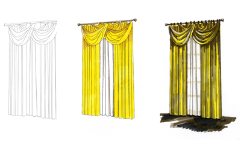
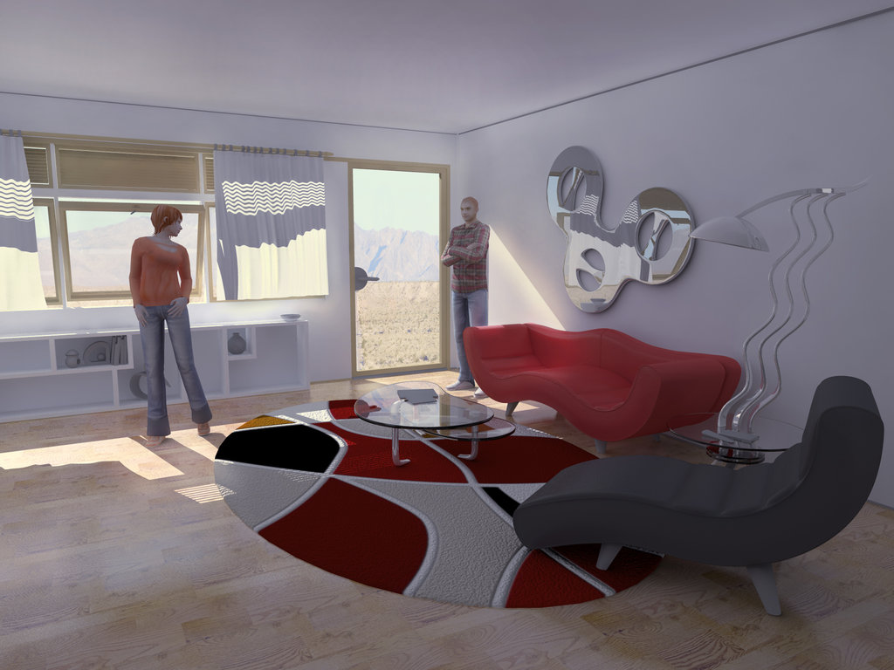
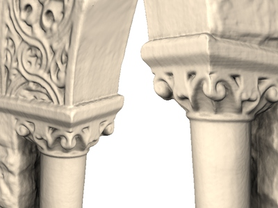

If you're new to 3D, you might have wondered what exactly is rendering? To casual fans and folks who are new to 3D production, the concept can initially seem as cryptic and unapproachable as hieroglyphics.[1][2]
While the sophisticated math and science behind rendering is far beyond the scope of this article, the process plays a crucial role in the computer graphics development cycle. We won’t go into too much depth here, but no discussion of the CG pipeline would be complete without at least mentioning the tools and methods for rendering 3D images.
Like Developing Film:
Rendering is the most technically complex aspect of 3D production, but it can actually be understood quite easily in the context of an analogy: Much like a film photographer must develop and print his photos before they can be displayed, computer graphics professionals are burdened a similar necessity.
When an artist is working on a 3D scene, the models he manipulates are actually a mathematical representation of points and surfaces (more specifically, vertices and polygons) in three-dimensional space.
The term rendering refers to the calculations performed by a 3D software package’s render engine to translate the scene from a mathematical approximation to a finalized 2D image. During the process, the entire scene’s spatial, textural, and lighting information are combined to determine the color value of each pixel in the flattened image.
Two Types of Rendering:
There are two major types of rendering, their chief difference being the speed at which images are computed and finalized.
1.Real-Time Rendering: Real-Time Rendering is used most prominently in gaming and interactive graphics, where images must be computed from 3D information at an incredibly rapid pace.
Interactivity: Because it is impossible to predict exactly how a player will interact with the game environment, images must be rendered in “real-time” as the action unfolds.
Speed Matters: In order for motion to appear fluid, a minimum of 18 - 20 frames per second must be rendered to the screen. Anything less than this and action will appear choppy.
The methods: Real-time rendering is drastically improved by dedicated graphics hardware (GPUs), and by pre-compiling as much information as possible. A great deal of a game environment’s lighting information is pre-computed and “baked” directly into the environment’s texture files to improve render speed.
2.Offline or Pre-Rendering: Offline rendering is used in situations where speed is less of an issue, with calculations typically performed using multi-core CPUs rather than dedicated graphics hardware.
Predictability: Offline rendering is seen most frequently in animation and effects work where visual complexity and photorealism are held to a much higher standard. Since there is no unpredictability as to what will appear in each frame, large studios have been known to dedicate up to 90 hours render time to individual frames.
Photorealism: Because offline rendering occurs within an open-ended time-frame, higher levels of photorealism can be achieved than with real-time rendering. Characters, environments, and their associated textures and lights are typically allowed higher polygon counts, and 4k (or higher) resolution texture files.
[3]Rendering in GamesRendering Techniques:
There are three major computational techniques used for most rendering. Each has its own set of advantages and disadvantages, making all three viable options in certain situations.
1.Scanline (or rasterization): Scanline rendering is used when speed is a necessity, which makes it the technique of choice for real-time rendering and interactive graphics. Instead of rendering an image pixel-by-pixel, scanline renderers compute on a polygon by polygon basis. Scanline techniques used in conjunction with precomputed (baked) lighting can achieve speeds of 60 frames per second or better on a high-end graphics card.
2.Raytracing: In raytracing, for every pixel in the scene, one (or more) ray(s) of light are traced from the camera to the nearest 3D object. The light ray is then passed through a set number of "bounces", which can include reflection or refraction depending on the materials in the 3D scene. The color of each pixel is computed algorithmically based on the light ray's interaction with objects in its traced path. Raytracing is capable of greater photorealism than scanline but is exponentially slower.
3.Radiosity: Unlike raytracing, radiosity is calculated independent of the camera, and is surface oriented rather than pixel-by-pixel. The primary function of radiosity is to more accurately simulate surface color by accounting for indirect illumination (bounced diffuse light). Radiosity is typically characterized by soft graduated shadows and color bleeding, where light from brightly colored objects "bleeds" onto nearby surfaces.
In practice, radiosity and raytracing are often used in conjunction with one another, using the advantages of each system to achieve impressive levels of photorealism.
Rendering[4]
Rendering Software
Although rendering relies on incredibly sophisticated calculations, today’s software provides easy to understand parameters that make it so an artist never needs to deal with the underlying mathematics. A render engine is included with every major 3D software suite, and most of them include material and lighting packages that make it possible to achieve stunning levels of photorealism.
The two most common render engines:
1.Mental Ray – Packaged with Autodesk Maya. Mental Ray is incredibly versatile, relatively fast, and probably the most competent renderer for character images that need subsurface scattering. Mental ray uses a combination of raytracing and "global illumination" (radiosity).
Mental ray[5]
2.V-Ray – You typically see V-Ray used in conjunction with 3DS Max—together the pair is absolutely unrivaled for architectural visualization and environment rendering. Chief advantages of VRay over its competitor are its lighting tools and extensive materials library for arch-viz.
![Vray[5]](img/vray.png)
V-ray[6]
This was just a brief overview of the basics of what it means to render an image. It's a technical subject, but can be quite interesting when you really start to take a deeper look at some of the common techniques.
Ongoing Research @UCL
"COMPREHENSIVE USE OF CURVATURE FOR ONLINE SURFACE RECONSTRUCTION"
Interactive real-time scene acquisition from hand-held depth cameras has recently developed much momentum, enabling applications in ad-hoc object acquisition, augmented reality and other fields. A key challenge to online reconstruction remains error accumulation in the reconstructed camera trajectory, due to drift-inducing instabilities in the range scan alignments of the underlying iterative-closest-point (ICP) algorithm. Various strategies have been proposed to mitigate that drift, including SIFT-based pre-alignment, color-based weighting of ICP pairs, stronger weighting of edge features, and so on.

In our work, we focus on surface curvature as a feature that is detectable on range scans alone and hence does not depend on accurate multi-sensor alignment. In contrast to previous work that took curvature into consideration, however, we treat curvature as an independent quantity that we consistently incorporate into every stage of the real-time reconstruction pipeline, including densely curvature-weighted ICP, range image fusion, local surface reconstruction, and rendering. Using multiple benchmark sequences, and in direct comparison to other state-of-the-art online acquisition systems, we show that our approach significantly reduces drift, both when analyzing individual pipeline stages in isolation, as well as seen across the online reconstruction pipeline as a whole.[7]
Read more about this research HERE
Reference:
[1]Pesantez, F. (2017). [online] Available at: https://www.linkedin.com/pulse/ue4-lighting-lookdev-felipe-pesantez [Accessed 7 Nov. 2017].
[2]Slick, J. (2017). What is Rendering?. [online] Lifewire. Available at: https://www.lifewire.com/what-is-rendering-1954 [Accessed 7 Nov. 2017].
[3]YouTube. (2017). Borderlands 3 Unreal Engine 4 Tech Demo - GDC 2017. [online] Available at: https://www.youtube.com/watch?v=TkF4U4mNED4 [Accessed 7 Nov. 2017].
[4]Blogs.jccc.edu. (2017)[online] Available at: http://blogs.jccc.edu/lcline/files/2012/04/draperies.jpg [Accessed 7 Nov. 2017].
[5]DeviantArt. (2017). day interior mental ray. [online] Available at: https://pujaantarbangsa.deviantart.com/art/day-interior-mental-ray-106838367 [Accessed 7 Nov. 2017].
[6] Vray.com. (2017)[online] Available at: https://www.vray.com/media/products/vray_for_sketchup/vray_3_for_sketchup_clipper.png [Accessed 7 Nov. 2017].
[7] http://reality.cs.ucl.ac.uk/projects/kinect/lefloch17comprehensive.html